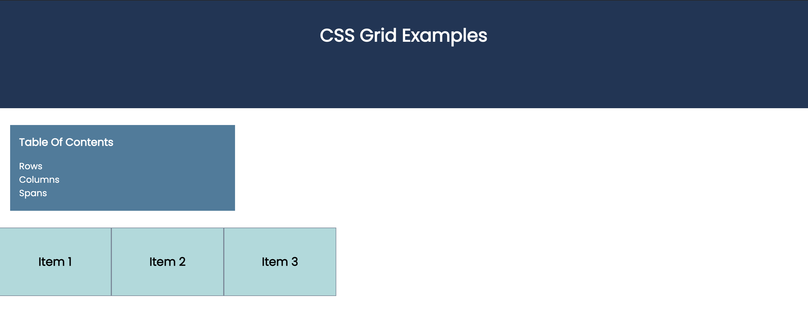
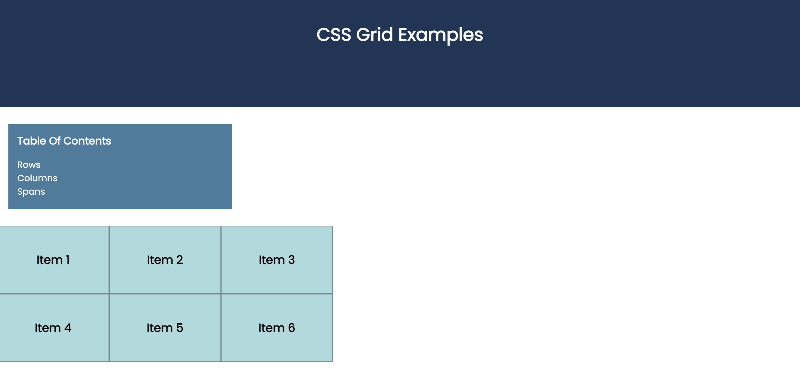

CSS grid layouts are defined by adding the following CSS ruleset:
display: grid;
Unlike flexbox, the grid rows and columns need to be defined with an additional rule. In the below example, each grid box is defined by a specific width
.grid {
display: grid;
grid-template-columns: 200px 200px 200px;
}
the result will look like this:
additional grid items will be forced into place (3 columns of 200px each):
We can also define a column width of 'auto', which will allow the column to fill any available remaining space in the viewport:
.grid {
display: grid;
grid-template-columns: 200px auto 200px;
}
In order to have the grid items fill the viewport evenly, we could do something like this:
.grid {
display: grid;
grid-template-columns: auto auto auto;
}
However, there is a better way. The repeat() function takes in two parameters - the number of times to repeat, and the width to repeat:
.grid {
display: grid;
grid-template-columns: repeat(3,auto);
}
The width parameter can be in almost any format (pixels, em, rem, percentage, etc) - however, the most common format is 'fr' , which will define a set number of 'frames' out of the available viewport width. We can also use 'grid-gap' to define the space between each item:
.grid {
display: grid;
grid-template-columns: 2fr 1fr 2fr;
grid-gap: 10px;
}